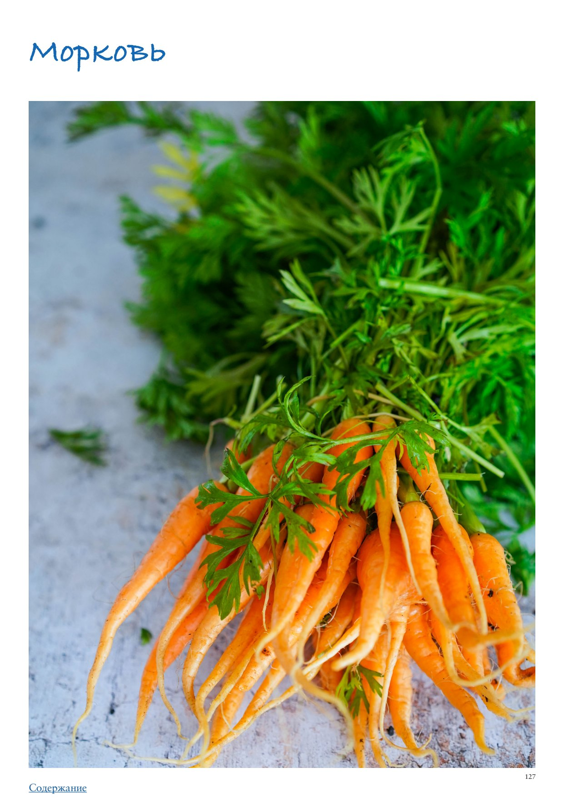

<!DOCTYPE html>
<html lang="en">
<head>
<meta charset="UTF-8">
<meta name="viewport" content="width=device-width, initial-scale=1.0">
<title>Морковь</title>
<style>
  * { box-sizing: border-box; margin: 0; padding: 0; }
  body { font-family: -apple-system, BlinkMacSystemFont, 'Segoe UI', Roboto, sans-serif;
         background: #faf7f4; color: #2d2926; max-width: 680px; margin: 0 auto; padding-bottom: 40px; }

  .photo-wrap img { width: 100%; max-height: 380px; object-fit: cover; object-position: center center; display: block; }

  .header { padding: 24px 24px 16px; }
  h1 { font-size: 26px; font-weight: 700; line-height: 1.2; margin-bottom: 10px; color: #1a1714; }
  .meta { font-size: 13px; color: #9a8a80; margin-bottom: 6px; }
  .rating { display: inline-block; background: #fff3e6; color: #c05f2a;
             font-size: 13px; font-weight: 600; padding: 3px 10px; border-radius: 20px; margin-bottom: 8px; }
  .source { font-size: 12px; color: #b0a09a; margin-top: 4px; }

  .info-bar { font-size: 13px; color: #5a4a3a; margin: 6px 0 4px; }

  .section { padding: 0 24px; margin-bottom: 24px; }
  .section-title { font-size: 15px; font-weight: 700; color: #7a4f2a;
                    text-transform: uppercase; letter-spacing: 0.6px;
                    margin-bottom: 12px; display: flex; align-items: center; gap: 8px; }
  .section-icon { font-size: 17px; }

  .subsection-title { font-size: 15px; font-weight: 700; color: #3a2a1a;
                       margin: 24px 0 10px; padding-bottom: 5px;
                       border-bottom: 2px solid #e8d5b8; }
  .ingr-subheader { font-size: 13px; font-weight: 700; text-transform: uppercase;
                     letter-spacing: 0.5px; color: #8a6a3a; margin: 14px 0 4px; }
  .ingr-list { list-style: none; display: flex; flex-direction: column; gap: 8px; }
  .ingr-list li { font-size: 15px; line-height: 1.5; padding: 8px 12px;
                   background: white; border-radius: 8px;
                   border-left: 3px solid #f0c080; }
  .qty { font-weight: 600; color: #c05f2a; }

  .steps { list-style: none; counter-reset: steps; display: flex; flex-direction: column; gap: 12px; }
  .steps li { font-size: 15px; line-height: 1.6; padding: 12px 14px 12px 48px;
               background: white; border-radius: 10px; position: relative; }
  .steps li::before { counter-increment: steps; content: counter(steps);
                       position: absolute; left: 12px; top: 12px;
                       width: 26px; height: 26px; background: #f0c080;
                       border-radius: 50%; display: flex; align-items: center;
                       justify-content: center; font-weight: 700; font-size: 13px; color: #7a4f2a; }

  .notes-list { list-style: disc; padding-left: 20px; margin: 0; }
  .notes-list li { font-size: 15px; line-height: 1.6; color: #2d2926; }

  .my-notes-section { margin-top: 8px; }
  .my-notes-box { background: #fffef5; border: 1.5px dashed #c8b870; border-radius: 12px;
                  padding: 14px 18px; font-size: 14px; line-height: 1.7; color: #5a4a30; }
  .my-notes-box p { margin-bottom: 6px; }
  .my-notes-box p:last-child { margin-bottom: 0; }
  .empty-note { color: #c0b090; font-style: italic; }

  .recipe-table { width: 100%; border-collapse: collapse; margin: 4px 0 12px; font-size: 14px; }
  .recipe-table th { background: #f5ede4; color: #7a4a28; padding: 8px 12px;
                      text-align: left; border: 1px solid #e0cfc0; font-weight: 700; }
  .recipe-table td { padding: 8px 12px; border: 1px solid #e8ddd5; vertical-align: top;
                      line-height: 1.5; }
  .recipe-table tr:nth-child(even) td { background: #fdf8f5; }

  p.para { font-size: 15px; line-height: 1.65; color: #2d2926; margin-bottom: 12px; }
  p.para:last-child { margin-bottom: 0; }

  .inline-photo { margin: 16px 0; border-radius: 10px; overflow: hidden; }
  .inline-photo img { width: 100%; max-height: 320px; object-fit: cover; object-position: center center; display: block; }
  .inline-photo.portrait { display: flex; flex-direction: column; align-items: center; background: transparent; }
  .inline-photo.portrait img { width: auto; max-width: 55%; max-height: none; object-fit: contain; border-radius: 10px; }
  .inline-photo.portrait figcaption { width: 55%; text-align: center; }
  .inline-photo figcaption { font-size: 12px; color: #9a8a80; padding: 6px 10px;
                               background: #f5f0eb; font-style: italic; }
  .inline-video { margin: 16px 0; border-radius: 10px; overflow: hidden; background: #000; }
  .inline-video video { width: 100%; max-height: 400px; display: block; }
  .inline-video figcaption { font-size: 12px; color: #9a8a80; padding: 6px 10px;
                               background: #f5f0eb; font-style: italic; }

  .related-section { font-size: 13px; margin-top: 8px; color: #9a8a80; }
  .related-label { font-weight: 600; color: #7a4f2a; }
  .related-link { color: #c05f2a; text-decoration: none; font-weight: 500; }
  .related-link:hover { text-decoration: underline; }

  .cooked-bar { font-size: 13px; margin-top: 10px; display: flex; flex-wrap: wrap; align-items: center; gap: 6px; }
  .cooked-label { font-weight: 600; color: #7a4f2a; }
  .cooked-chip { background: #f0ede6; color: #5a4a3a; padding: 3px 10px;
                  border-radius: 20px; font-size: 13px; border: 1px solid #d8cfc4; }

  .my-photo-wrap { margin: 24px 24px 0; border-radius: 12px; overflow: hidden;
                    border: 2px solid #e8d9c8; }
  .my-photo-label { background: #f5ede4; color: #7a4f2a; font-size: 12px; font-weight: 600;
                     padding: 6px 14px; letter-spacing: 0.4px; }
  .my-photo-wrap img { width: 100%; max-height: 420px; object-fit: cover;
                        object-position: center; display: block; }

  .back-btn { display: inline-flex; align-items: center; gap: 6px;
               margin: 28px 24px 20px;
               background: #c05f2a; color: white;
               font-size: 14px; font-weight: 600;
               padding: 8px 16px; border-radius: 20px;
               text-decoration: none; }
  .back-btn:hover { background: #a04e22; text-decoration: none; }

  @media (max-width: 480px) {
    h1 { font-size: 22px; }
    .steps li { padding-left: 42px; }
  }
</style>
</head>
<body>
  <a class="back-btn" href="../cookbook.html">← Catalog</a>
  <div class="photo-wrap"></div>
  <div class="header">
    
    <h1>Морковь</h1>
    <div class="meta">ПРАктика. Овощи</div>
    
    
    
    <div class="source">Source: ПРАктика. Овощи</div>
  </div>
  
  
        <div class="section">
          
          <p class="para">Морковь</p><p class="para">Морковь настолько доступна, что само ее существование воспринимается как нечто само собой разумеющееся. Разные виды моркови отличаются плотностью мякоти, формой — от цилиндрической до конусообразной, содержанием сахара и большей или меньшей способностью к длительному хранению. Глаз радуется морковной радуге: белая, красная, оранжевая, желтая и фиолетовая. Только представьте, какой красивый салат получится, если в нем использовать морковь разных цветов и добавить зеленых красок цукини, огурца или зеленого горошка в палитру! Скромная с виду морковь незаменима в овощных базовых заготовках: итальянское софрито (морковь + лук + сельдерей), которое во Франции называется мирпуа, наша традиционная зажарка для супов (лук + морковь), сложно представить себе традиционный плов без морковки, которой в блюде, по мнению знатоков, должно быть не меньше, чем мяса. Оранжевая красавица прекрасно проявляет себя в свежих и хрустящих салатах, согревающих супах-пюре, томленая или карамелизованная, в качестве гарнира или самостоятельного блюда. Невозможно не упомянуть о нежном, влажном и необыкновенно вкусном морковном кексе или торте. Из моркови даже умудряются делать вегетарианские «сосиски» для хот-догов (см. рецепт ниже)! Любопытный факт: вплоть до средних веков вся морковь была фиолетовая и довольно горькая на вкус, а выращивали ее ради ароматной ботвы и семян. Привычная сегодня оранжевая разновидность появилась лишь в 17 веке в результате усилий голландских селекционеров. Молодая морковь Она появляется на прилавках ранним летом и приветствует нас жизнерадостными оранжево￾зелеными пучками. Чуть менее сладкая, чем осенняя, но невероятно сочная, свежая и хрустящая! Самое простое, что с ней можно сделать, — сгрызть, держа за зеленый хвостик, как многие наверняка поступали в детстве. Кроме того, она великолепна на гриле, в составе стир-фрая, быстро обжаренная на сливочном масле с каплей лимонного или апельсинового сока. Однако молодая морковка плохо хранится, поэтому нужно успеть насладиться ею на пике сезона. Поздняя (зрелая) морковь Урожай моркови обычно собирают поздней осенью, и такая морковь — темно-оранжевая, сладкая, плотная — хранится всю зиму, до следующего сезона. Бэби-морковь (мини-морковь) Вопреки расхожему мнению, что бэби-морковь — отдельный миниатюрный сорт моркови, на самом деле это обычная морковь, нарезанная ровными округлыми кусочками, повторяющими форму обычного корнеплода. Бэби-морковь — плод предприимчивости фермера из Калифорнии, которому надоело выбрасывать неровные или подпорченные корнеплоды, и он решил срезать все лишнее, оставив только самое красивое и вкусное. Новый продукт очень понравился потребителям за удобство — можно купить пакетик мини-морковки, полностью готовой к употреблению, и получить здоровый перекус, к тому же дети с большой охотой грызут эти ровненькие гладкие цилиндры ярко-оранжевого цвета. Как выбирать Если морковь в сезон продается с ботвой, выбирайте ту, у которой зеленые части яркого цвета и без признаков вялости. Вне сезона выбирайте корнеплоды среднего размера: чем крупнее морковь, тем ее вкус менее насыщенный, она даже может горчить. Покупайте твердую морковь с гладкой кожицей, без пятен или трещин, которые могут быть признаком того, что овощ начинает портиться. Избегайте кривых и разветвленных корнеплодов — мало того, что с ними неудобно работать, но, скорее всего, была нарушена технология выращивания.</p><p class="para">Как хранить Для хранения моркови необходим довольно высокий уровень влажности, иначе она начнет вянуть, но в то же время избыток влаги может привести к загниванию корнеплода. Оптимальным местом хранения является ящик для овощей, куда морковь нужно поместить, уложив в бумажный пакет или обернув бумажными полотенцами. Так как основная влага уходит через зеленую ботву, ее необходимо максимально срезать. Не рекомендуется мыть морковь перед хранением, можно протереть бумажным полотенцем, чтобы убрать землю, а мыть лучше уже перед использованием. При правильных условиях морковь может храниться в холодильнике пару недель и даже дольше. Как чистить и нарезать Молодую морковь можно вообще не чистить, а только хорошо вымыть и потереть щеточкой или губкой для посуды. Позднюю морковь легче всего чистить овощечисткой, это позволит снять ровный тонкий слой кожицы. В зависимости от дальнейшего приготовления, морковь можно нарезать соломкой, кубиками, кружочками, брусочками, тонкими лепестками или ленточками. Часто по рецепту требуется морковь натереть. Форма и плотность моркови делают ее идеальным овощем для модного ныне спиралайзера, с помощью которого можно делать овощные «спагетти». Очень удобно нарезать морковь тонкой соломкой с помощью специальной терки для корейской морковки — соломка получается ровной и одинаковой по толщине. Чтобы получить кубики, морковь нужно разрезать вдоль на пластины нужной толщины, сложить стопкой несколько пластин, прижать к разделочной доске, разрезать на тонкие бруски вдоль, удерживая их вместе, затем нарезать поперек. Чтобы получить брусочки, нужно разрезать морковь вдоль на пластины, уложить несколько пластин стопкой, прижать к разделочной доске и нарезать брусочками поперек или слегка по диагонали (это позволит регулировать длину брусочков). Чтобы получить тонкую соломку, нужно сначала разрезать морковь по диагонали на тонкие овальные ломтики, сложить их небольшой стопкой и нарезать соломкой по длинной стороне овала. Нарезая морковь поперек, можно получить ровные кружочки или овальные ломтики, если резать по диагонали. Лайфхаки</p><ul class="notes-list"><li>С помощью овощечистки можно нарезать морковь на тонкие ленты и использовать в салате в свежем виде или, свернув из них розочки, превратить в украшение тартов и запеканок.</li><li>Морковные ленты будут еще более хрустящими, если их замочить в ледяной воде на 5–10 минут, только перед добавлением в салат их нужно обязательно тщательно обсушить.</li><li>Если вы купили молодую морковку с ботвой, не выбрасывайте ботву. Из нее получается отличное песто по тому же принципу, что и классическое, только нужно заменить базилик морковной ботвой.</li></ul><p class="para">Как готовить Вареная морковь Вареная морковь присутствует в традиционных зимних салатах наряду со свеклой и картофелем. Как и с другими овощами, важно сохранить легкую упругость при варке моркови. Целую неочищенную морковь можно сварить в подсоленной воде или на пару, это займет 20–30 минут, в зависимости от размера, готовность определяется с помощью вилки или зубочистки — морковь легко прокалывается, но сохраняет упругость. Вареную морковь легко очистить от кожицы, просто поскоблив ножом. Запеченная морковь Запекание моркови усиливает ее природную сладость, она приобретает карамельный привкус. Для запекания можно нарезать очищенную морковь вдоль пополам или крупными кусками более-менее одинакового размера. Разогреть духовку до 200 °С. В миске перемешать морковь с оливковым или растопленным сливочным маслом, чтобы каждый кусочек был покрыт тонкой пленкой, посолить, поперчить и выложить на противень (если морковь разрезана вдоль, то срезом вниз), запекать до мягкости и легкого подрумянивания.</p><ul class="notes-list"><li>Готовую морковь можно использовать в качестве гарнира, посыпав перед подачей петрушкой и сбрызнув лимонным соком.</li><li>Можно полить запеченную морковь соусом на основе кунжутной пасты, для чего смешать 1 ст. л. тхины с 1 ст. л. оливкового масла и 1 ч. л. лимонного сока. Карамелизованная морковь Чтобы морковь стала блестящей и нежной, но при этом сохранила форму и цвет, нужно начать готовить ее в достаточном количестве жидкости под крышкой, а затем снять крышку, выпарить лишнюю влагу, чтобы соус превратился в глазурь. 500 г моркови 100 мл овощного бульона (или воды) 3 ст. л. сахара 15 г сливочного масла 2 ст. л. лимонного сока соль, свежемолотый черный перец</li></ul><ol class="steps"><li>Морковь очистить, нарезать по диагонали на овалы толщиной 5–6 мм.</li><li>Соединить в сотейнике морковь, бульон, 1 ст. л. сахара и 1/2 ч. л. соли, довести до кипения, уменьшить огонь, накрыть крышкой и готовить, периодически помешивая, почти до мягкости, около 5 минут.</li><li>Снять крышку, выпарить жидкость, чтобы осталось примерно 2 ст. л. густого соуса.</li><li>Вмешать масло, нарезанное кубиками, и оставшийся сахар, готовить еще 3 минуты, постоянно перемешивая, пока каждый ломтик моркови не покроется золотистой глазурью.</li><li>Снять с огня, добавить лимонный сок, перемешать, приправить свежемолотым перцем. При необходимости досолить. Вариант: карамелизованная морковь с апельсином и вяленой клюквой Заменить половину бульона апельсиновым соком (50 мл сока + 50 мл бульона), добавить к моркови 30 г вяленой клюквы и большую щепотку апельсиновой цедры. Использовать только 1 ст. л. сахара. Вместо вяленой клюквы можно взять вяленую вишню без косточек.</li><li>Вегетарианские «сосиски» из моркови 8 морковок 250 мл овощного бульона 100 мл соевого соуса 80 мл яблочного уксуса 1 ст. л. кленового сиропа 1 ч. л. горчицы 3 ч. л. чесночного порошка 2 ч. л. лукового порошка 2 ч. л. копченой паприки 1/2 ч. л. свежемолотого перца</li><li>Очистить морковь, обрезать кончики.</li><li>В миске смешать все остальные ингредиенты.</li><li>Уложить морковь в кастрюлю в один слой, залить маринадом. Довести до кипения, убавить огонь и томить 10–12 минут под крышкой, пока морковь не будет легко прокалываться зубочисткой.</li><li>Снять с огня, оставить в маринаде минимум на 30 минут. (Можно переложить морковь в контейнер, залить жидкостью, в которой она готовилась, и оставить в холодильнике на ночь.)</li><li>Для подачи обжарить морковь на гриле или сковородке гриль до появления темных полосочек или просто пожарить на обычной сковородке до золотистого цвета. Подавать с соусом или в составе хот-дога. Сочетание моркови с другими продуктами Морковь отлично сочетается с другими овощами: чесноком, картофелем, редькой, капустой, свеклой, тыквой, шпинатом, кабачками, огурцами, сельдереем, бататом, луком, а также с фруктами и яркими специями: апельсином, яблоком, кардамоном, имбирем, корицей, кумином (зирой). Ее вкус становится глубже в присутствии сливочного масла и сливок, меда, сухофруктов, орехов, коричневого сахара. На самом деле, очень сложно представить, с каким продуктом морковь бы не сочеталась. Что еще можно приготовить с морковью</li></ol><ul class="notes-list"><li>Салат из моркови с фасолью</li><li>Рыба под морковным маринадом</li><li>Морковь по-корейски</li><li>Крем-суп из моркови с имбирем</li><li>Спринг-роллы с овощами</li><li>Морковные котлеты</li><li>Молодая морковь на гриле</li><li>Паста «Примавера»</li><li>Гратен из корнеплодов</li><li>Морковный торт или кекс</li></ul>
        </div>
</body>
</html>